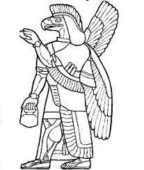

Marv al Laouenan
La Mort du Roitelet - 1ère Mélodie (Rythme: 3/4)
Texte recueilli par François-Marie Luzel
auprès de Marie Clec'h, à Loguivy - Plougras,
le 11 novembre 1863
Publié dans "Sonioù Breizh-Izel" en 1890
Mélodie
Tiré de "Musiques bretonnes", de Maurice Duhamel;
recueilli auprès de Marguerite Philippe, de Pluzunet
Arrangement Christian Souchon (c) 2011Source: le site de M.Quentel, "Son ha ton" (voir "Liens")

MARO AL LAOUENAN |
VERSION "BARZHAZ BREIZH" |
English Translation: "The Wren's Death" (Luzel)
|
1.The other day I took a walk When a wren suddenly I caught. 2. It was caught and caught well, indeed And was kept in a crib to feed. |
3. Once it was fat as expected The butcher came to slaughter it. 4. The butcher cries. So do his mates Everybody vociferates |
5. They did their best to hold it fast When it saw the man with the knife. 6. Four cartloads of an iron cart Of its feathers for Nantes now start. 7. And there is left of them at home Enough to fill four eiderdowns... |
On trouvera des développements passionants à ces adresses:
terreceltiche.altervista.org/marv-al-laouenan
et
piereligion.org/wrenkingsongs

Al Laouenan - 2ème mélodie
Al Laouenan - 3ème mélodie
Al Laouenan - 4ème mélodie (texte complet)
Retour à "Marzhin Barzh" du 'Barzhaz Breizh'